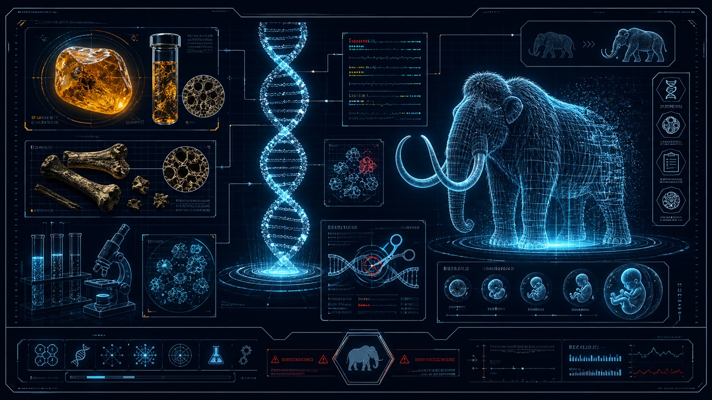
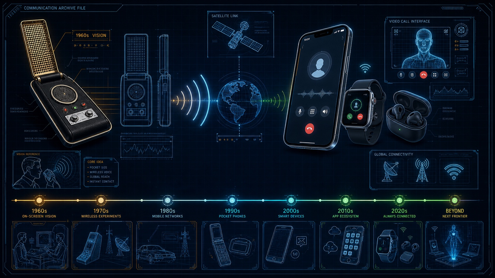
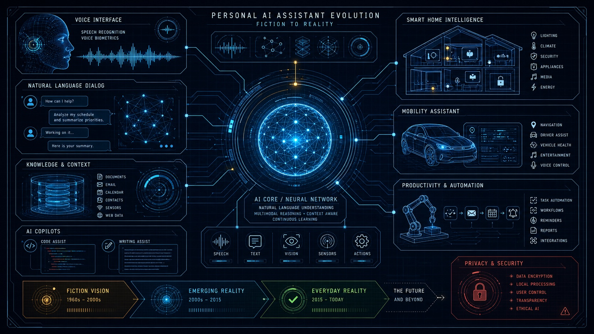
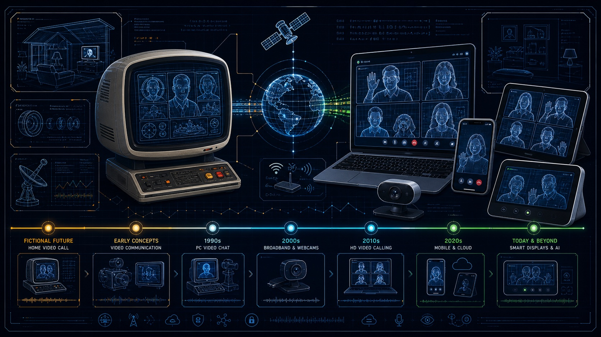
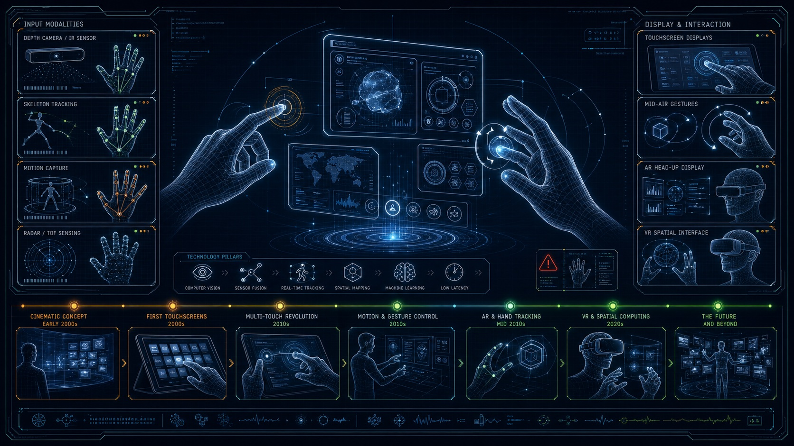
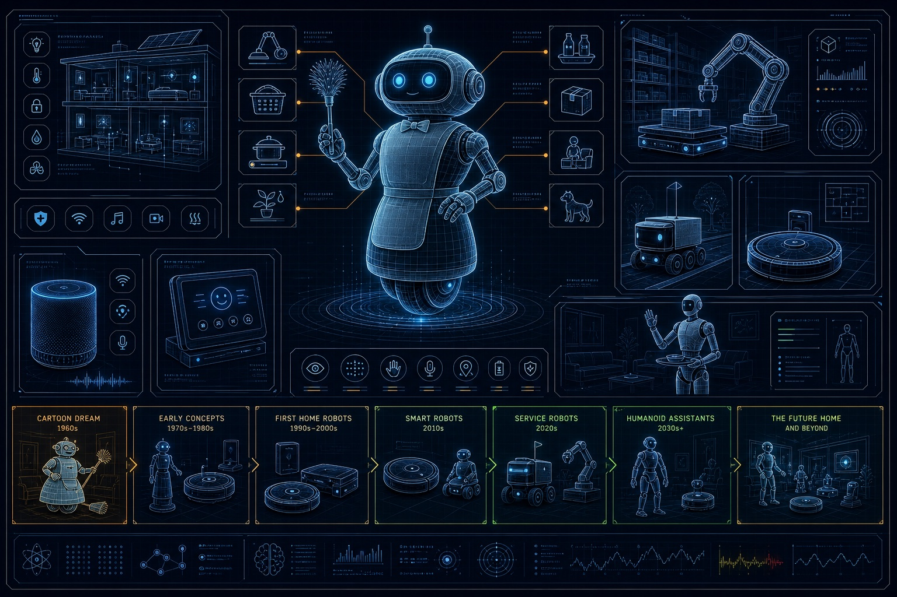

Knight Rider's AI car
KITT could talk, drive itself, scan danger, respond to natural commands, and protect its driver.
Future archive 001
A visual museum of impossible ideas from movies, shows, books, and predictions that turned into real technology.
Featured comparison
KITT could talk, drive itself, scan danger, respond to natural commands, and protect its driver.
Self-driving features, driver assist, emergency braking, parking assist, voice systems, cameras, radar, and AI route planning are real today.
Mostly real, but not yet one fully human-like car that can safely handle every road and situation.

Next visual system
Jurassic Park made the idea famous: ancient DNA could bring lost creatures back. Reality is more careful. Scientists compare extinct genomes with living relatives, then use gene-editing tools to recreate selected traits.

Communication jump
The old sci-fi dream was simple: carry a small device and speak instantly across distance. Reality went further with smartphones, watches, earbuds, satellites, video calls, maps, cameras, and always-on global networks.

AI assistant jump
The dream was a calm intelligence that could listen, answer, control systems, and help with complex work. Reality arrived as voice assistants, chat AI, smart homes, vehicle assistants, coding copilots, and automation tools.

Connection jump
The old fiction imagined families appearing on home screens in real time. Reality made it normal through webcams, broadband, mobile networks, laptops, phones, tablets, and smart displays connected across the world.

Interface jump
The cinematic version imagined people moving data through the air with their hands. Reality spread that idea across touchscreens, gesture cameras, AR overlays, VR hand tracking, and motion-controlled interfaces in labs, homes, and headsets.

Home robotics jump
The Jetsons imagined a single robot assistant handling domestic life with ease. Reality arrived in pieces: robot vacuums, delivery bots, warehouse systems, smart speakers, and early humanoid helpers that can take over specific daily tasks.
Open archive
Time jump
AI cars felt like pure fantasy.
Ancient life becomes a global imagination point.
Some ideas came true fully. Others are still partly real.
The future archive keeps updating.
Next phase